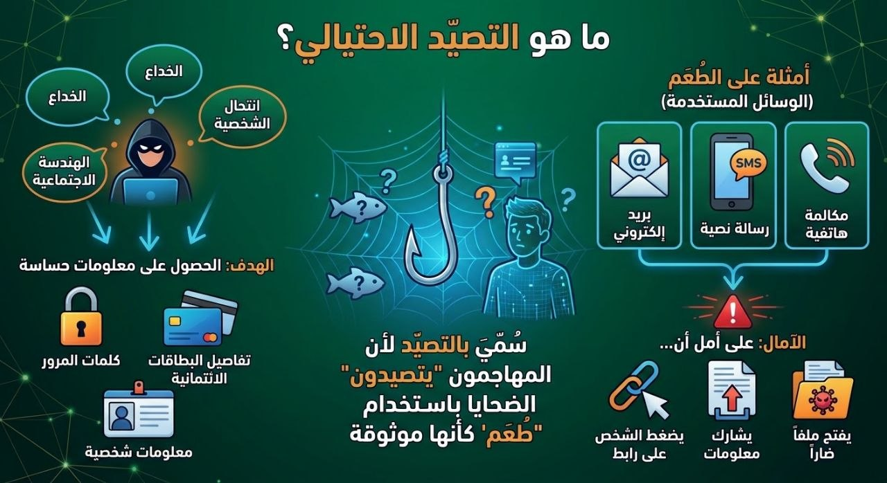
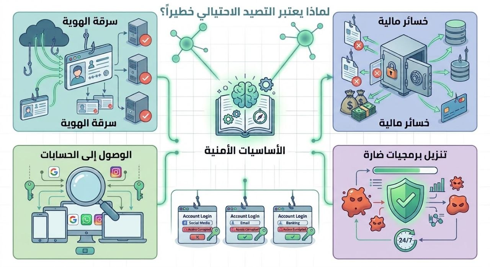
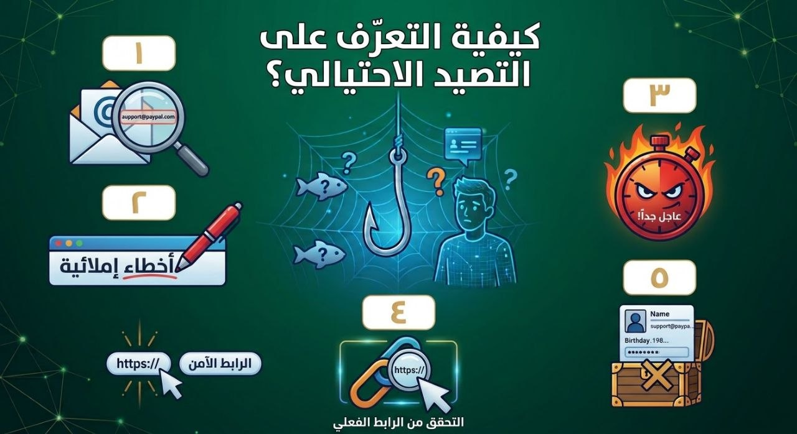

ما هو التصيد الاحتيالي؟
التصيد الاحتيالي هو نوع من الجرائم السيبرانية يستخدم فيه المهاجمون الخداع، انتحال الشخصية، والهندسة الاجتماعية للحصول على معلومات حساسة (مثل كلمات المرور، تفاصيل البطاقات الائتمانية، أو معلومات شخصية).
سُمّـيَ بالتصيّد لأن المهاجمون "يتصيدون" الضحايا باستخدام "طُعَم" كأنها موثوقة. من الأمثلة على ذلك: بريد إلكتروني، رسالة نصية، أو مكالمة هاتفية، على أمل أن يضغط الشخص على رابط، أو يشارك معلومات، أو يفتح ملفاً ضاراً.

لماذا يعتبر التصيد الاحتيالي خطيراً؟
- سرقة الهوية: يستخدم معلوماتك لفتح حسابات أو تقديم طلبات باسمك.
- خسائر مالية: يقوم بالوصول المباشر إلى حساباتك البنكية أو بطاقاتك الائتمانية.
- الوصول إلى الحسابات: يتحكم في حساباتك على وسائل التواصل الاجتماعي أو البريد الإلكتروني.
- الإضرار بالسمعة: يستخدم حساباتك لإرسال رسائل احتيالية لأصدقائك وعائلتك.
- إصابة الأجهزة: يؤدي الى تنزيل برمجيات ضارة (مثل برمجيات الفدية) التي تشفر ملفاتك.

كيف تتعرف على التصيّد الاحتيالي؟
يمكن التعرف عليه من خلال العلامات الشائعة وهي:
- علامات البريد الإلكتروني المشبوهة: عنوان مرسل غريب؛ لذا يجب فحص عنوان البريد الإلكتروني بعناية (ليس الاسم الظاهر فقط). غالباً ما يكون مشابهاً ولكنه غير صحيح (مثال: support@paypaI.com بدلاً من paypal.com).
- أخطاء إملائية ونحوية: الرسائل الرسمية من الشركات الكبرى تكون مراجَعَة ونادراً ما تحتوي على أخطاء.
- نغمة ملحة وتهديدية: استخدام عبارات مثل "تصرف الآن!"، "سيتم إغلاق حسابك"، "ضروري جداً" لخلق شعور بالاستعجال.
- روابط مشبوهة: مرر الماوس فوق الروابط لمعاينة العنوان الفعلي قبل الضغط. (يجب أن يبدأ العنوان بـ HTTPS://).
- طلبات لمعلومات شخصية: لأن الشركات الموثوقة لا تطلب كلمات المرور أو معلومات حساسة عبر البريد الإلكتروني.
